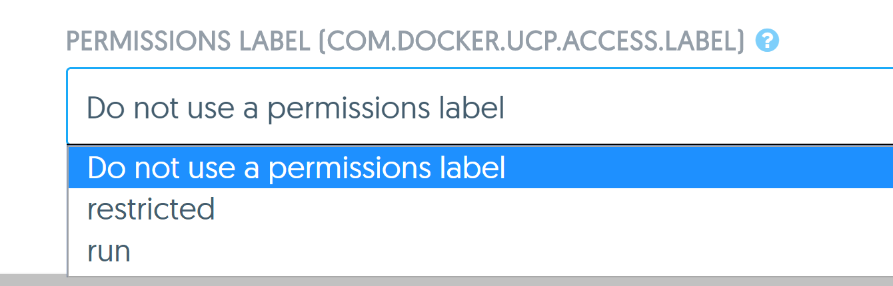
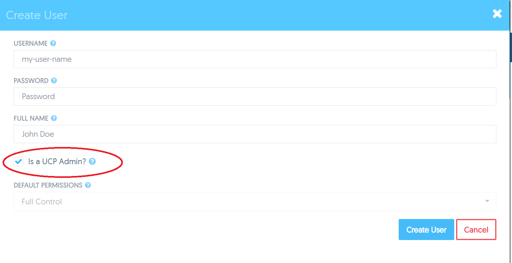

Mini lecture: UCP access control
Mini lecture: UCP access control
User default permissions
- Controls what users can do with resources such as volumes, images and networks and containers
- Four possible permissions
- No access
- View only
- Restricted control
- Full control
- Further role based access control (RBAC) to containers via team permissions
Role based access control
- Defined via team permissions
- Specify a label and apply a permission to that label
- Four possible permissions
- No access
- View only
- Restricted control
- Full control
- Access control is applied to services, containers and networks by applying a particular label
Deploying services with labels
- Specify the label on the Permissions Label field
- Teams using that label in their permissions will be granted access to the Service and its containers based on the permission associated with that label
- Can specify multiple labels

- Users can only choose labels mapped to the "Restricted Access" or "Full Control" permission
- Containers can be deployed without a label if the user's default permission is "Restricted Access" or "Full Control"
- Container will only be visible to the user who deployed it
- Users will only see containers with labels they have access to
Team permissions
- Different teams can have the same labels in their permissions
- Example
- "Engineering" team has "production" label mapped to "View Only" permission
- "Ops" team has "production" label mapped to "Full Control" permission
- Access level for users in multiple teams?
Restricted control
- Similar to Full control but with a few key restrictions
- Allows users to create, restart, kill or remove containers
- Does not give permission to
docker exec into a container
- Also prevents running:
- Privileged containers
- Host mounted volumes
Configuring role based access
- Identify one or more labels to apply to containers
- Create one or more teams
- Define a permission by combining a pre-identified label with a specific permission value (i.e. view only)
- Add users to the team
- Ensure container creators use the pre-defined labels
Admin users
- Are authorized to access all Docker objects in UCP
- Access either through GUI or client bundle
